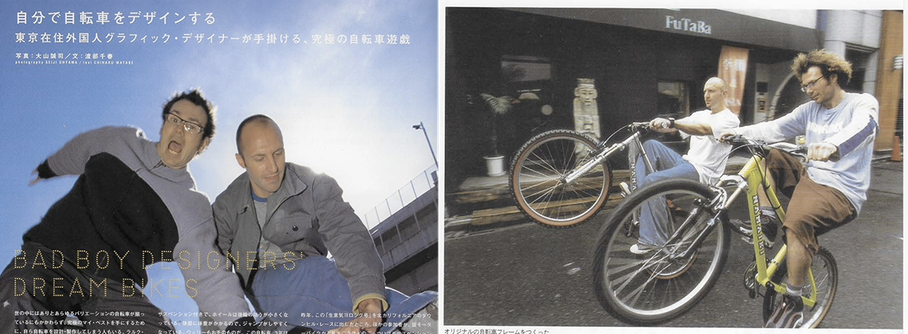
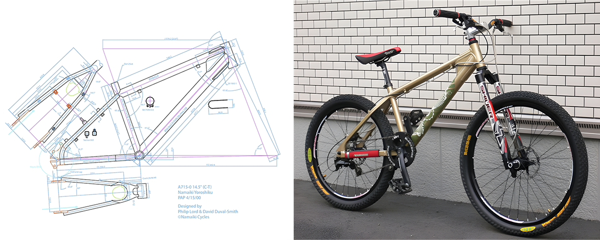
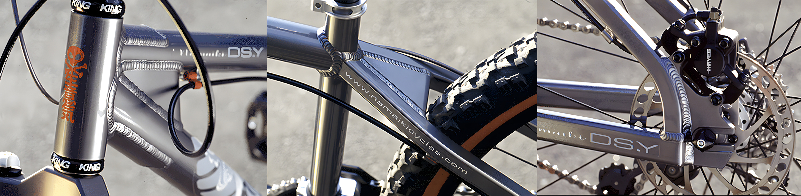
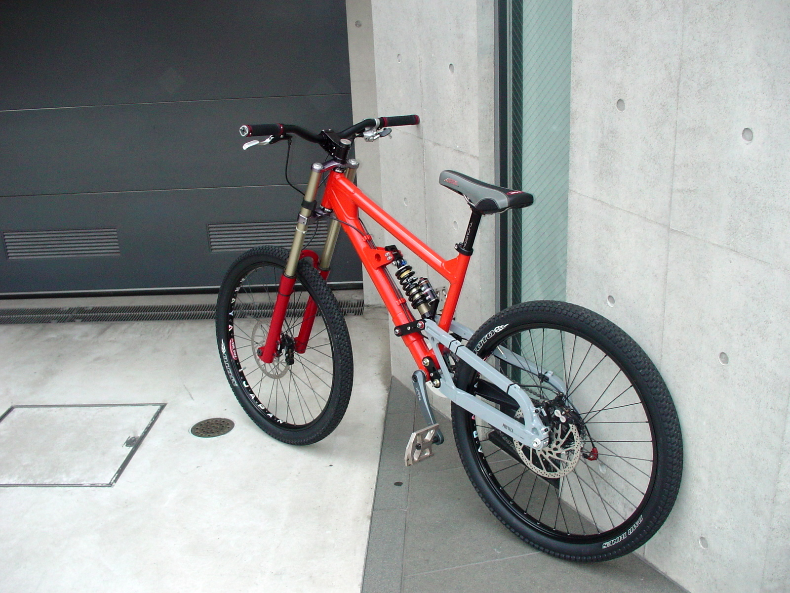

Namaiki Cycles 生意気 サイクルズ
Namaiki Cycles was a Tokyo-based Japanese bicycle brand that produced high-end mountain bike frames focused on dirt jumping, street riding, and dual slalom disciplines. Co-founded and co-owned in the late 1990s by long-time friends and designers David Duval-Smith and Philip Lord, the brand pioneered a hybrid philosophy combining the nimble playfulness of BMX with the capability of mountain bikes. Affectionately known as "Namachari" in Japan—a play on the classic mamachari (city bike).
Document Gallery
Click any page thumbnail to view full-screen alongside its precise verbatim translation.
Founders & Owners
- Namaiki Cycles: Co-founded and co-owned the independent bicycle venture with Philip Lord, collaboratively leading frameset geometry and design.
- Namaiki Design: Separate from the cycle brand, David (alongside Mike Frank) ran the creative/graphic design agency Namaiki Design out of and in collaboration with the legendary SuperDeluxe venue in Nishi-Azabu, Tokyo.
- Namaiki Cycles: Co-founded and co-owned the independent bicycle venture with David Duval-Smith, collaboratively leading frameset geometry and design.
- Wieden+Kennedy Tokyo: Prior to and alongside Namaiki Cycles, Philip worked as an Art Director at Wieden+Kennedy Tokyo, leading award-winning advertising campaigns for Nike Japan.

Grounded in over a decade of shared BMX riding and friendship, Namaiki Cycles operated as an equal, independent creative venture funded entirely by its creators without outside corporate ownership.
Name & Meaning

Namaiki (生意気) is often thought to break down literally as nama (raw / natural) and iki (breath / spirit)—as if translating to "raw breath." However, in actual Japanese kanji composition, 生 (nama) here functions as a prefix meaning "impure," "saucy," or "half-baked," combined with 意気 (iki) meaning spirit, disposition, or mettle. Together, namaiki (生意気) translates idiomatically to cheeky, saucy, impudent, or insolent—perfectly capturing the rebellious, cheeky, fun-first ethos of the brand.
Manufacturing & Build
Built from aerospace-grade 7005 aluminum and manufactured at the renowned Kinesis USA factory, featuring heavy-duty gussets for extreme durability. Their catchphrase loosely translated to: "Cool, Easy to jump, Strong."
The DS-Y Frame
Acronym for Dual Slalom Yoroshiku


-
•
Hybrid Wheel Geometry: A radical departure from standard 26-inch mountain bikes of the era, engineered specifically with a 26-inch front wheel and a compact 24-inch rear wheel (or configured as a dedicated 24" setup).
-
•
Short Rear Center: Shortening the rear-center (crank axle to rear wheel axle) made manualing, bunny-hopping, and shifting rider weight behind the rear axle effortless.
-
•
Cultural & Media Impact: Featured extensively across prominent Japanese and international cycling publications—including Bicycle Club Magazine, MTB Magazine Japan, clic.ex, and GOD Magazine—complete with distinct Japanese tattoo-inspired graphics ("Monmon") on the down tube.
Transition & Rodo Racing
Following the limited run of Namaiki framesets, development transitioned under a new banner: Rodo Racing ("Stuff from the Land of the Rising Sun").

Namaiki & Rodo Photo Collection
Explore original photographs from the archive. Click any thumbnail to view full-size.
CAD Archive Downloads
Licensed for Personal & Non-Commercial Use Only. All Commercial, Production, and Tradename Rights Reserved by Philip Lord / Namaiki Cycles.
Historical References & Media Archive Index
- Pinkbike (Dec 2003): "RODO Shows Spyphoto" - Coverage of the RODO LO-8 downhill frame prototype.
- Wayback Machine: RODORACING.COM - Official Rodo Racing relaunch and announcement archive.
- Wayback Machine: NAMAIKICYCLES.COM - Official brand site detailing Dave and Phil's 13+ year BMX roots.
- Japanese Print Publications: Bicycle Club Magazine (1999/2000), MTB Magazine Japan (2001), clic.ex Magazine (#77), GOD Magazine, MTB All Catalog (2001/2002/2004), and Designers' Workshop (Vol. 16, No. 106).